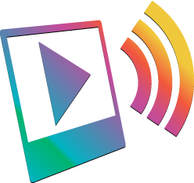
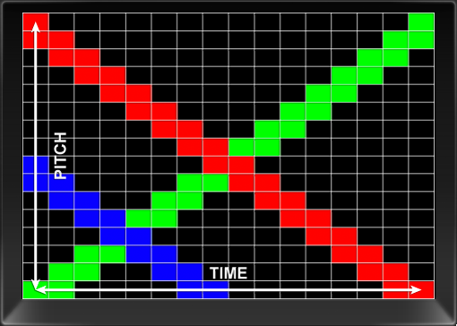

Sonify is a web experiment that reads an image, pixel by pixel, and plays it back as music — an image editor paired with a wavetable synth.

01 What is Sonify?
Sonify uses the Web Audio API to synthesize sound directly from a picture. The canvas is divided into a grid; the average color of each block is mapped to pitch, gain and timbre, then sequenced into a short, looping phrase.
Adjust the image with the on-screen effects and the music changes with it — because the sound is read from the filtered pixels, not the original. Editing the picture is editing the song.
02 Why color & sound?
“The sound of colours is so definite that it would be hard to find anyone who would try to express bright yellow in the bass notes, or dark lake in the treble.” — Wassily Kandinsky, Concerning the Spiritual in Art
03 Sonification
“The transformation of data relations into perceived relations in an acoustic signal, for the purposes of facilitating communication or interpretation.” — Kramer et al., Sonification Report: Status of the Field and Research Agenda (1999)
Sonify’s guiding principles are an amalgam of perceptual observations drawn from several fields. Research has yet to specify a complete paradigm for sonification — so this is as much an experiment as a tool.
04 Parameter mappings
Each slider is wired to a specific musical parameter. Color and tone shape pitch and loudness; the red, green and blue channels each voice a different waveform; the effects become audio effects.
| Color & tone | Sound parameter |
|---|---|
| Hue | Pitch detune amount |
| Saturation | Voice separation |
| Lightness | Note gain |
| Contrast | Note gain |
| Brightness | Note gain |
| Channel | Waveform |
|---|---|
| Red | Square wave |
| Green | Sine wave |
| Blue | Triangle wave |
| Effect | Audio parameter |
|---|---|
| Blur | Reverberation amount |
| Sharpen | Amplitude attack / decay |
| Glow | Note gain |
| Noise | Delay amount |
05 Mapping scheme

06 Built with HTML5
The picture lives in a <canvas>; getImageData() hands its pixels to the synth. All of the sound is generated live in the browser with the Web Audio API — nothing is pre-recorded.
The image effects now run on native canvas and SVG filters, baked straight into the pixels the synth reads.
07 Evaluation
Press play: a test image runs through the same mapping, and its spectrogram builds live from the sound. Each colored block lands where it should in pitch and time — switch patterns to watch the picture rewrite the music.
08 Future work